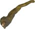
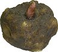
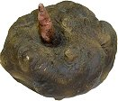
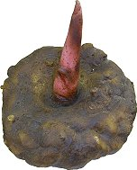
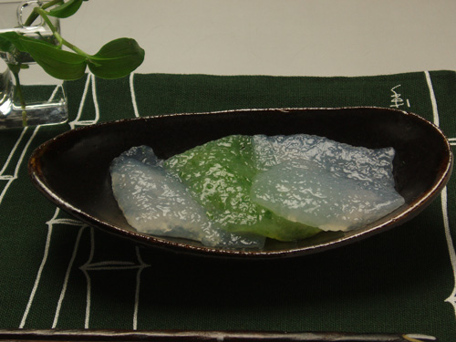
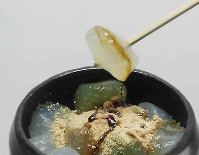

짙은 자주색 꽃 같은 토란과의 물파초나 백합과 비슷하다. 잎은 땅 아래에서 성장하는 잎자루가 자라며, 그 앞에 1장만 붙이는 것이 특징이다. 꽃이 피면 강렬한 냄새가 난다.
곤약은 [구약감자 ]으로 불리는 토란과의 식물의 구경에서 만들어진 가공식품입니다. 곤약의 원산지는 인도네시아 반도라고 알려져 있으며, 현지에서는 뿌리의 모양 때문에 [코끼리의 발]이라는 별명이 있습니다.
지금도 동남아시아에서는 수많은 구약감자가 자생하고 있으며 그 종류는 약 130종이라고 알려져 있지만, 대부분이 일본의 구약감자와는 품종이 틀려 곤약 만난(mannan)이라는 식이 섬유가 포함되지 않는 구약감자로, 가공해서도 굳어지지 않고 곤약으론 적합하지 않지만 최근에는 중국을 시작해, 동남아시아의 각국에서도 일본 수출용으로 식용 재배하고 있는 상황입니다. 곤약은 6세기쯤 불경과 합께 중국에서 전해졌다고 되어있습니다만, 분명한 것은 알려지지 않았습니다.
곤약 감자는 감자와 마찬가지로 씨감자에서 늘어나지만, 감자와 달리 성장하는데 2~3년이 걸린다.
먼저, 봄에 씨감자를 심으면 새로운 감자가 생기고 거기에서 뿌리줄기가 뻗어, 가을에는 알줄기라는 곤약감자의 [아기]가 생깁니다. 이 알줄기를 한번 수확해 다음 봄에 또 심은 것을 1년생, 그것을 가을에 수확한 것을 2년생, 또한 다음 봄에 심어 가을에 수확한 것을3년생이라고 합니다.
알줄기에서 1년생은 5~10배, 2년생에서 3년생은 또 5~8배 성장, 3년생 되면 큰 것은 직경 30센티 정도로 성장합니다. 곤약 만들기에 적합한 것은이 3년생이지만, 곤약감자는 저온에 약하고 부패하기 쉽기 때문에 수확후 다음 심을 때까지 보관이 매우 어려운 작물입니다.

(1)

(2) 1년생

(3) 2년생

(4) 3년생
일본에는 오래전부터 재배되어오고 있던 [재래종][기 중 종]이라는 종류가 있었지만, 이것들은 각각 비슷한 성질을 가지고 있었기 때문에 교배시켜 품종개량하는 것이 어려워 다이쇼 시대중국에서 [시나 종]이라는 종류를 수입해서 보다 재배하기 쉬운 품종을 만드는 데 성공했습니다.
그 결과 [하루나 쿠로], [아카기오오타마]. [미야마 마사리]란 개량 종이 탄생했습니다. 현재는 이 3품종으로 생산의 97% 이상을 차지하고 있습니다. 이처럼 최근에는 보다 재배하기 쉽고 생산성이 높은 품종이 등장하고 있습니다.
지푸라기를 깔아 흙이 건조지 않게 합니다. 온도의 급격한 변화를 방지하고 잡초가 잘아나지 않게 되어 벌레나 질병을 예방할 수도 있습니다.
예로부터 재배되고 있던 곤약 감자이지만, 의외로 안정된 재배법이 확립된것은 1955 년경. 곤약 감자는 잎에 상처가 나는 것만으로도 병이 들어 버릴 만큼 민감한 식물이기 때문에 강한 햇빛이나 바람, 가뭄, 배수가 나뿐 곳에서는 잘 성장하지 않습니다. 이제까지는 오랜 경험과 운에 맡겼을 정도로 재배자를 울린 작물이었기 때문입니다.
곤약 감자는 연평균 13도 정도의 기온이 필요하기 때문에 한랭지에 서는 재배할 수 있지만 크게 성장하는 것은 어렵고 노지 재배는 미야기현, 야마가타현이 북방 한계입니다. 옛날에는 극히 일반 농가에서 가정용으로 재배되었지만 생산 중시의 재배에 들어서는 군마현을 시작해 도치기, 사이타마현 등의북간도 지방에서 많이 재배되고 있습니다.
곤약 감자의 생산량 넘버원은 군마현. 시장 점유율 91.9%(2013년).
(2013년산) 수확량 (톤)
자료: 농림수산성 통계 정보부 (군마/ 토치기), 이바라키(현청 조사)
씨감자가 되는 곤약 감자는 수확 후 온도관리가 필요합니다. 밭에서 반나절 말린 후 통풍이 잘 되는 그늘에서 잘건조합니다. 겨울 동안은 신문지에 하나씩 감싸 통풍이 잘 되는 바구니에 넣어 최저기온이 13도 이하가 되지 않는 곳에 보관합니다.
[생활습관병]은 평소의 식사 등의 생활습관이 발병이나 진행에 깊이 관여하고 있는 질병이며, 그 배경에는 [비만]이 있습니다. [비만] 이외에 고혈압, 당뇨병, 이상 지질혈증이 겹친 상태를 [대사 증후군]이라고 합니다.
저칼로리이면서 식이 섬유가 풍부한 곤약은 옛날부터 전해져 온 정장 작용, 변비 해소뿐만 아니라 현대인의 고민인 비만이나 생활 습관병의 예방・개선과 대사 증후군에 도움이 된다고 밝혀졌습니다.
잘 씹어 먹으면 뇌의 시상 하부에 있는[만복 중추 ]가 자극되어 배부르게 먹지 않아도 만족감을 얻을 수 있어 과식을 방지합니다.
여기에는 너무 부드럽지도, 너무 딱딱하지 않고 탄력과 씹는 맛이 있고 쫄깃쫄깃한 식감을 갖고 있고 간이 잘 베이는 곤약이 가장 적합합니다. 곤약은 씹으면 씹을수록 맛있고 천천히 먹는데 안성맞춤입니다. 또한 곤약을 요리에 사용하면 칼로리를 높이지 않고 요리의 양을 늘리거나 반찬 수를 늘릴 수 있으므로 비만 방지에 최적입니다.

당뇨병은 혈액 중의 혈당치가 높아져포도당(상승된 혈당을 정상으로 돌려주는 힘)이 저하하여 혈액의 혈당을 제어할 수 없게 되는 병입니다.
포도당을 섭취하면 혈당과 인슐린 농도는 증가하지만 포도당에 곤약 만난을 추가하면 그 상승 정도는 억제됩니다. 이 때문에 곤약 만난은 소장 상부에서 포도당의 급격한 흡수를 억제하는 효과가 있을 수 있습니다.
또한 곤약은 곤약 만난 작용 외에, 저칼로리로 먹고 포만감이 있기 때문에 당뇨병의 위험 요인인 과식과 비만을 미연에 방지하는 효과도 있습니다.
너무 높아서도 너무 낮아도 안되는 혈중 콜레스테롤
혈중 콜레스테롤이 증가하면 동맥벽에스며 들어 동맥 경화됩니다. 이것은 일상생활 습관이 원인이 되는 경우가 많아 고칼로리 · 고지방의 식생활을 개선해야 합니다. 콜레스테롤 수치를 정상으로 하는 식사는 섭취 칼로리를 조절해 지방을 억제하고 식이 섬유를 적극적으로 먹는 것이 포인트입니다. 곤약은 대부분이 수분으로 저칼로리 식품이기 때문에 만족감을 얻을 수 있으며 전체의 칼로리를 다운시킬 수도 있습니다.
또 콜레스테롤의 소장에서의 흡수를 억제시켜주고 또한 간에서 배설되는 담즙산이 소장에서 재 흡수되는 것도 방지하기 위해
혈중 콜레스테롤 수치의 비정상적으로상승하는 것을 억제시켜줍니다. 콜레스테롤은 몸의 세포막의 원료가 되어, 호르몬의 합성에 꼭 필요하기 때문에 너무 낮은 것도 문제이지만 곤약 만난 의 작용은 어디까지나 콜레스테롤 수치를 정상 유지하는 작용이므로 걱정하지 않아도 됩니다.

변비는 식이 섬유의 섭취 부족, 불규칙한 식사, 운동부족, 스트레스 등 많은 생활 습관이 원인이 되어 있으며, 이완성 변비는 점막의 자극 감수성과 배변 반사의 발병 방법이 약해지고 대장의 대변 수송력이 지연되고 있는 것입니다. 여기에는 불용성 식이 섬유가 많은 음식이 좋다고 여겨지고 있습니다.
이에 대해 경련성 변비의 경우는 자극이 너무 강한 면 경련이 일어나기 때문에 곤약과 같은 생리 효과를 가진 식품이 좋다고 여겨지고 있습니다.
곤약은 부드럽게 대장을 자극해서 배변 반사를 높여 배를 쏙 들어가게 해줍니다.
나이가 들어가면서 요통이나 무릎 통증 때문에 몸을 움직이기가 어려워 지거나 넘어지기만 해도 골절 하거나 누워서만 지내거나 용양 간호 같은 [보행장애] 로 이어질 수 있습니다. 이러한 몸을 움직이는 기능이 저하되면 보행장애가 된 상태나 보행장애가 되는 위험성이 높은 상태를 [운동기능저하 증후군]이라고 합니다.
또한 식생활에서 칼슘의 부족이 장기화하면 뼈가 스펀지처럼 되는 골 가공증을 초래합니다.
노화에 의해 더욱 증상이 진행되면 넘어지기만 해도 골절 해, 그대로 누워서 생활하기 때문에 평소 칼슘 섭취의 노력이 필요합니다.
곤약 중에서도 진한 곤약액을 사용하는 시라타키는 보통의 곤약보다 약 배의 칼슘이 포함되어 있습니다.
헬리코박터 파일로리(파일로리균)은 사람의 위의 안에서 생식하는 세균으로 위점막에 정착해 만성위염, 위궤양, 십이지장궤양, 심지어는 위암 등을 일으킵니다. 또한 소아의 철분 겹핍 빈혈, 만성 신장 홍역 등의 위 이외의 질병의 원인이 될 수도 있다고 밝혀져 있습니다.
파일로리균을 살균하면 위암의 예방 등에 연결되어, 적극적인 살균이 요구되고 있습니다 만, 항생제 등에 의한 살균은 부작용이 내성균의 발현